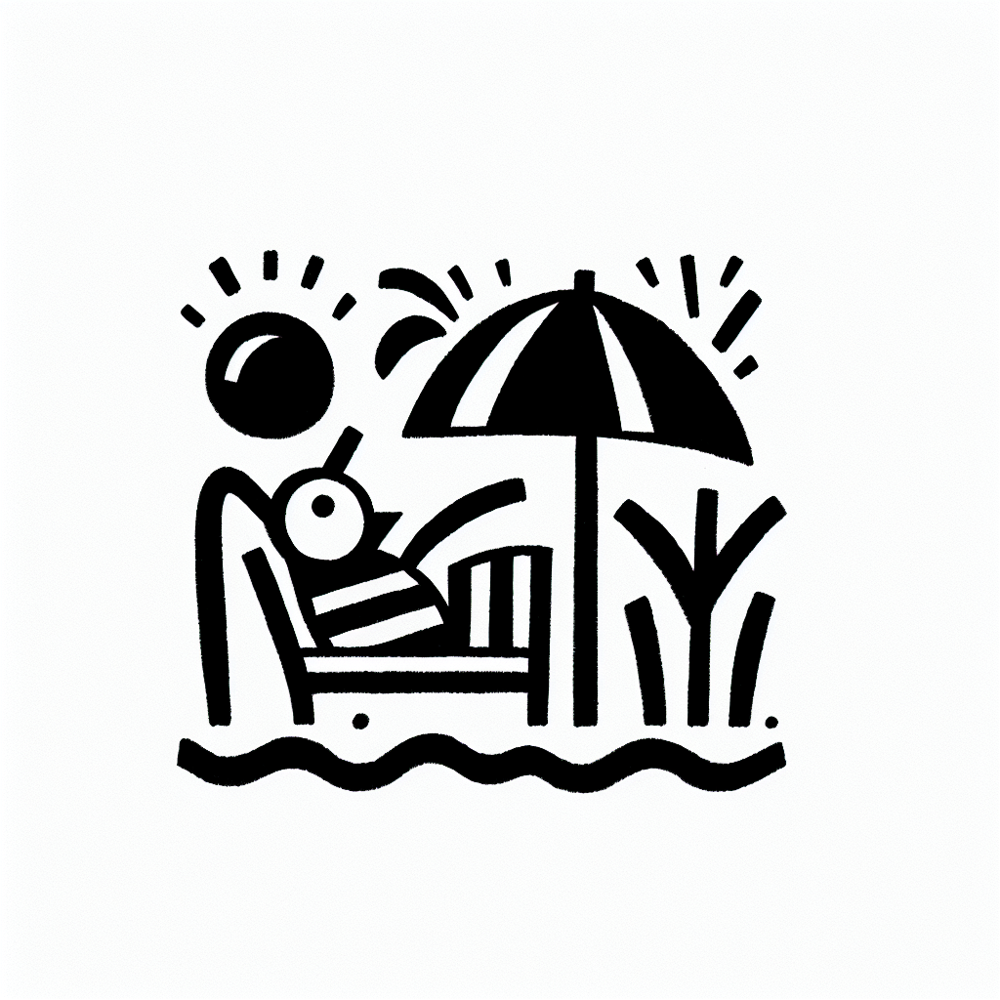

Souplesse et Lagree : un duo gagnant
Souplesse et Lagree : un duo gagnant
Imaginez un entraînement qui non seulement renforce vos muscles, mais améliore également votre souplesse tout en respectant votre corps. C'est un équilibre que le Studio Lagree de DOZ à Anglet a parfaitement réussi à atteindre. Dans le cadre inspirant de la côte basque, combinant la passion du bien-être physique et du café artisanal, découvrez pourquoi la méthode Lagree et la souplesse forment une combinaison gagnante.
La souplesse : un atout indispensable
La souplesse est souvent négligée dans le cadre d'une routine de fitness. Pourtant, elle joue un rôle crucial dans la prévention des blessures et l'amélioration des performances générales.
- Améliore la circulation sanguine et la récupération musculaire.
- Aide à maintenir une posture correcte et à soulager les douleurs chroniques.
- Augmente l'amplitude des mouvements, ce qui est essentiel pour des activités variées, du surf à la pratique quotidienne du yoga.
Chez DOZ, nous croyons que le renforcement musculaire ne doit pas compromettre la flexibilité. Nous utilisons la méthode Lagree pour combiner force, endurance et souplesse.
Qu'est-ce que la méthode Lagree ?
La méthode Lagree se distingue par ses entraînements haute intensité mais sans impact. Nos machines MegaPro sont au cœur de cette technique innovante, offrant une variété d'exercices qui ciblent tous les aspects de la condition physique.
En quoi ce style d'entraînement est-il si particulier ?
- Il encourage des mouvements lents et contrôlés pour garantir une forme parfaite.
- Il renforce les muscles profonds pour un corps tonique et sculpté.
- Il accorde une importance particulière aux étirements et à l'allongement musculaire pour maximiser la flexibilité.
L'approche holistique de DOZ intègre naturellement la souplesse dans chaque session Lagree, rendant chaque entraînement équilibré et bénéfique.
La fusion parfaite : la méthode Lagree et le style de vie 'Healthy & Surf'
Vivre dans la région basque inspire un mode de vie actif, où l'océan et les montagnes appellent à l'exploration. Ici, chez DOZ, nous avons créé un espace qui incarne ce mode de vie 'Healthy & Surf'.
Ainsi, pratiquer la méthode Lagree chez nous vous offre :
- Une augmentation de votre saison de surf grâce à une meilleure flexibilité et à une tonification musculaire.
- Un espace accueillant et inspirant, où le design minimaliste rencontre la fonctionnalité brute, symbolisant notre philosophie 'Instant Brut'.
- Un coffee shop où vous pouvez savourer des mets sains et du café de spécialité après une session revigorante.
Le parcours pour améliorer votre souplesse tout en gagnant en force est non seulement accessible mais aussi profondément gratifiant.
Une routine complète pour une vie équilibrée
Intégrer plus de souplesse dans votre vie ne doit pas être une obligation fastidieuse. Chez DOZ, nous avons simplifié le processus :
- Réservez votre session Lagree : Choisissez un créneau qui convient à votre emploi du temps chargé.
- Profitez d'une séance complète : Alliant force, endurance et souplesse dans notre studio équipé des machines MegaPro.
- Resserrez les liens avec vous-même et votre communauté locale : Notre coffee shop est idéal pour échanger autour d'un café de spécialité fraîchement torréfié.
Avec ce cadre, votre routine de fitness se transforme naturellement en un style de vie complet et épanouissant.
Conclusion : Faites le premier pas vers un nouveau vous
La souplesse et la méthode Lagree sont un duo puissant pour ceux qui cherchent à vivre pleinement, que ce soit dans les vagues d'Anglet ou dans le quotidien.
Prêt à embrasser un nouveau mode de vie ? Réservez dès maintenant votre cours au Studio Lagree chez DOZ et découvrez les bénéfices d'une flexibilité accrue associée à une force bien définie. Après tout, un corps souple est une porte ouverte à l'aventure.
Nous avons hâte de vous accueillir dans notre espace chaleureux, où le bien-être physique et le plaisir gustatif ne font qu'un.